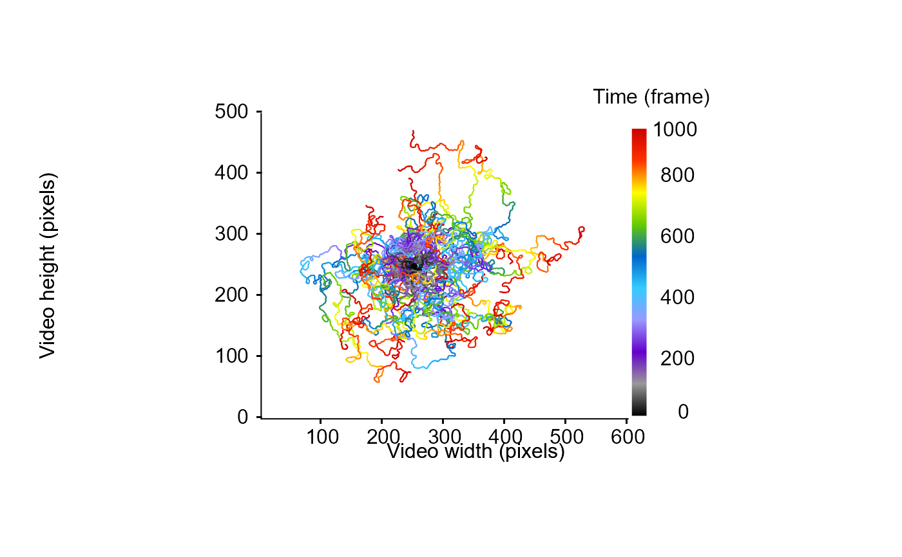

Given a list of data frames containing tracking informations and including the value of turning angles, distance traveled and activity states (either 1 or 0 for active or inactive state respectively), this function compute the mean square displacement value corresponding to a measure of the deviation of a particle's position according to a reference position over time. Computation can be performed through the use of the equations derived from Kareiva & Shigesada (1983) or Turchin (2015). In a nutshell the Turchin's equation for MSD is a simplified version of the Kareiva & Shigesada' equation, assuming symmetric turning angles.
Usage
MSD(
trackDat,
turnAngle = NULL,
distTraveled = NULL,
activityStates = NULL,
method = c("Turchin", "KS")
)Arguments
- trackDat
A list of data frame containing tracking informations for each tracklet.
- turnAngle
A character string indicating the name of the variable specifying the turning angles over each trajectories.
- distTraveled
A character string indicating the name of the variable specifying the distance traveled by the particles.
- activityStates
A character string indicating the name of the variable specifying activity state (coded as 1 or 0 for active and inactive state, respectively).
- method
A character string indicating the method used to compute the net square displacement, either "Turchin" or "KS" to use the computation derived from the equations of Turchin's book 2015 edition (corrected version of the chapter 5.3 from 1998) or from Kareiva & Shigesada (1983) (default = "Turchin").
Value
this function returns the Mean Square Displacement (MSD) value according to the equations derived from Turchin (2015) or Kareiva & Shigesada (1983).
References
Kareiva, P.M., Shigesada, N., (1983). Analyzing insect movement as correlated random walk. Oecologia 56,234–238. https://doi.org/10.1007/BF00379695
Turchin, P., (2015). Quantitative Analysis of Movement: Measuring and Modeling Population Redistribution in Animals and Plants. Beresta Books, Storrs, Connecticut.
Examples
# simulate a correlated random walk with known parameter to verify Turchin D computation
## specify some parameters
nn = 1000
stepLength = 1
angularErrorSd = pi / 4
## create a function to simulate correlated random walk
myccrw <- function() {
disps = runif(nn, min = 0, max = 2 * stepLength)
angulos = runif(nn, min = -angularErrorSd, max = angularErrorSd)
lesx = rep(0, nn)
lesy = rep(0, nn)
curangle = runif(1, min = -pi, max = pi)
for (t in 2:nn) {
curangle = curangle + angulos[t]
lesx[t] = lesx[t - 1] + sin(curangle)
lesy[t] = lesy[t - 1] + cos(curangle)
}
return(data.frame(
x.pos = lesx + 250,
y.pos = lesy + 250,
frame = 1:nn
))
}
# simulated 30 tracklets
nbr = 30
simus <- lapply(1:nbr, function(rrr)
myccrw())
# take a look at the simulated data
MoveR::drawTracklets(simus)

# Manually compute diffusion coefficient through time over all tracklets
arda = sapply(1:nbr, function(t) {
ff = simus[[t]]
mimi = sapply(1:length(ff$x.pos), function(d)
((ff$x.pos[d] - 250) ^ 2 + (ff$y.pos[d] - 250) ^ 2))
return(mimi)
})
mimiz = apply(arda, 1, function(x) mean(x))
# plot it
plot(
x = 1:nn,
mimiz,
ylim = c(0, 30000),
xlab = "Number of steps",
ylab = "mean MSD"
)
# compute the needed metrics on simulated tracklets
simComp <-
MoveR::analyseTracklets(
simus,
customFunc = list(
## compute turning angle in radians over each tracklet (a modulus present within the MoveR package)
turnAngle = function(x)
MoveR::turnAngle(
x,
timeCol = "frame",
unit = "radians",
scale = 1
),
## compute distance traveled
distTraveled = function(x)
MoveR::distTraveled(x, step = 1),
## add behavioral states (consider as active all the time)
activity = function(x)
rep(1, nrow(x))
)
)
MSD <- MoveR::MSD(
simComp,
turnAngle = "turnAngle",
distTraveled = "distTraveled",
activityStates = "activity",
method = "Turchin"
)
# retrieve the total number of steps to add the computed MSD trend to the plot
nsteps <- nn * nbr
abline(0, MSD/nsteps , col = "red")